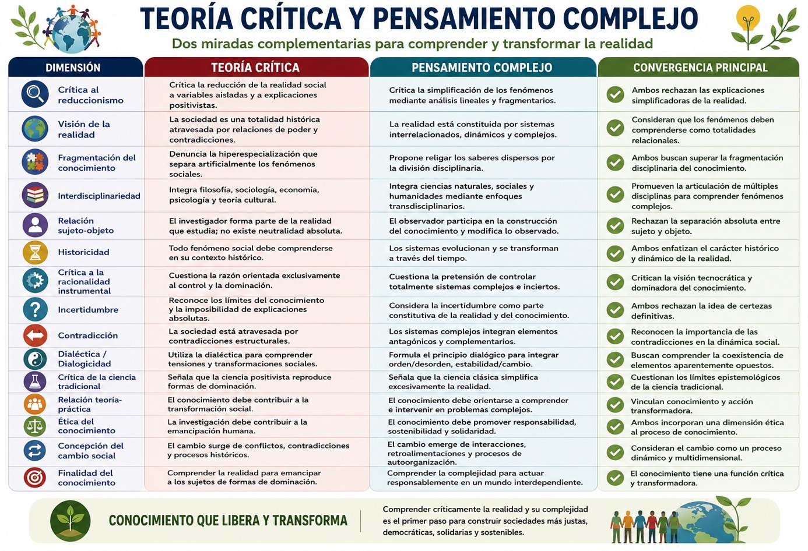
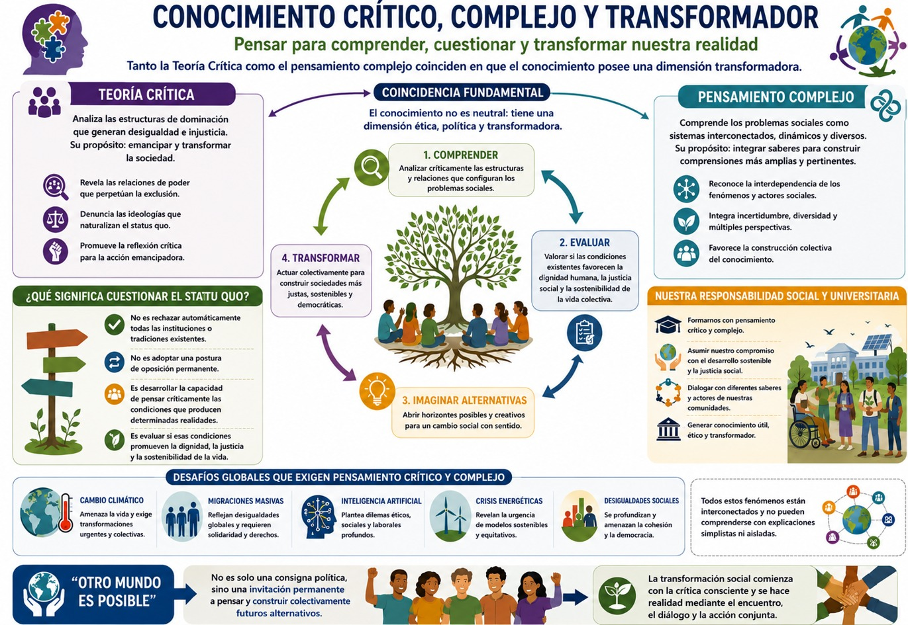
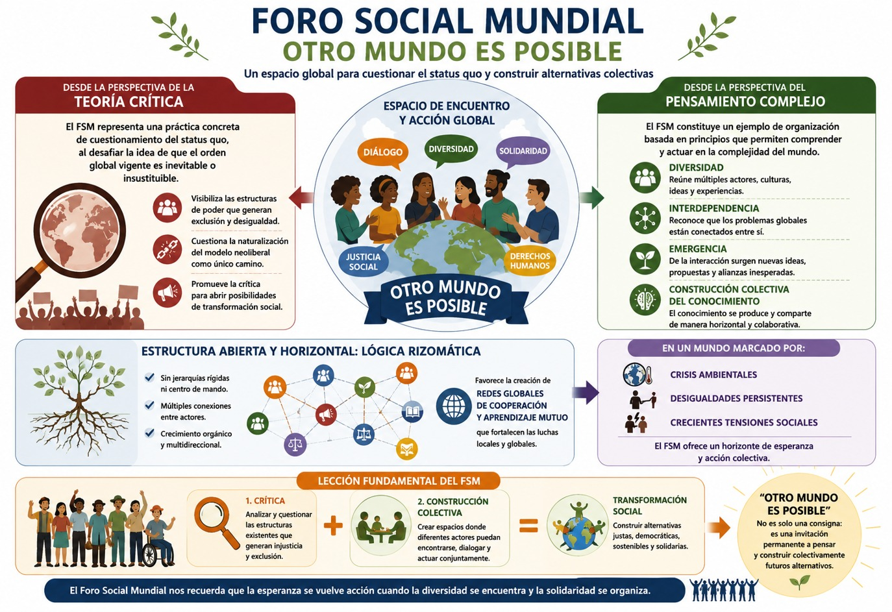

Como hemos visto en el bloque 1 la emergencia del pensamiento complejo durante la segunda mitad del siglo XX suele asociarse a las contribuciones de Edgar Morin, Humberto Maturana, Francisco Varela, entre otros. Sin embargo, muchas de las preocupaciones epistemológicas que dieron origen a este paradigma ya estaban presentes décadas antes en la tradición de la Teoría Crítica desarrollada por Max Horkheimer y otros miembros de la Escuela de Frankfurt. Aunque ambos enfoques surgieron en contextos históricos distintos y con propósitos intelectuales específicos, comparten una preocupación fundamental: la insuficiencia de los modelos de conocimiento fragmentarios, reduccionistas y disciplinarios para comprender la complejidad de la realidad social y más aún, la necesidad de generar y basarnos en un pensamiento crítico para proponer solución a los problemas sociales.
Escuela de Frankfurt y Teoría Crítica. Horkheimer Fundamentos del pensamiento crítico.
La Escuela de Frankfurt fue una corriente de pensamiento filosófico y sociológico surgida en la década de 1920 alrededor del Instituto de Investigación Social, asociado a la Universidad de Frankfurt en Alemania. Sus principales representantes, entre ellos Max Horkheimer, Theodor W. Adorno, Herbert Marcuse y posteriormente Jürgen Habermas, desarrollaron la denominada Teoría Crítica como una alternativa a las formas tradicionales de conocimiento. Su objetivo consistía en analizar las condiciones históricas, económicas, políticas y culturales que producen la dominación y la desigualdad en las sociedades modernas. Frente al positivismo y a las visiones fragmentadas de la realidad, la Escuela de Frankfurt propuso una comprensión interdisciplinaria de los fenómenos sociales, integrando aportes de la filosofía, la sociología, la economía política, el psicoanálisis y la teoría cultural. De este modo, la Teoría Crítica no se limitaba a describir la sociedad, sino que buscaba revelar las estructuras de poder que condicionan la vida social y contribuir a la emancipación humana mediante una reflexión crítica sobre la razón, la cultura, la ciencia y las instituciones modernas.
La Teoría Crítica nació como una respuesta a las limitaciones de la ciencia positivista y a la creciente instrumentalización de la razón en las sociedades industriales avanzadas. Horkheimer observó que el conocimiento científico había sido progresivamente separado de las condiciones históricas y sociales que lo producían, generando una comprensión, no sólo parcial de la realidad, sino también alejada de ésta.
Uno de los aportes fundamentales de Horkheimer consiste en señalar que la ciencia moderna tiende a fragmentar la realidad en objetos aislados de estudio. Esta especialización creciente permite acumular conocimientos cada vez más detallados, pero dificulta la comprensión de las relaciones que vinculan los fenómenos entre sí. Para la Teoría Crítica, el conocimiento pierde capacidad explicativa cuando se separa artificialmente de los procesos históricos, económicos, culturales y políticos que le dan origen.
Esta crítica anticipa uno de los fundamentos centrales del pensamiento complejo: la necesidad de comprender los fenómenos desde sus interrelaciones. Edgar Morin denominará posteriormente a esta exigencia el principio de contextualización, según el cual ninguna realidad puede ser entendida fuera de los sistemas de relaciones que la constituyen. Mientras la racionalidad clásica divide y simplifica, el pensamiento complejo busca religar aquello que ha sido separado por la organización disciplinaria del conocimiento.
La fragmentación denunciada por Horkheimer también se encuentra en la base de muchos de los problemas contemporáneos. En este sentido, la Teoría Crítica contribuyó tempranamente a cuestionar la ilusión de que los problemas complejos pudieran resolverse mediante conocimientos especializados y aislados.
Otro de los ejes centrales de la obra de Horkheimer es la crítica a la racionalidad instrumental. Según este autor, la modernidad transformó progresivamente la razón en un instrumento orientado al control, la eficiencia y la dominación de la naturaleza y de la sociedad. La ciencia pasó a valorar principalmente aquello que podía medirse, predecirse y manipularse, reduciendo la riqueza de la experiencia humana a variables susceptibles de control técnico.
Esta crítica guarda una estrecha relación con la emergencia del pensamiento complejo pues las ciencias de la complejidad muestran precisamente los límites de los modelos predictivos tradicionales. La teoría del caos, la termodinámica de sistemas alejados del equilibrio y las teorías de la autoorganización revelan que muchos fenómenos son inherentemente inciertos, dinámicos y no lineales. En consecuencia, el ideal moderno de control absoluto resulta epistemológicamente insostenible.
Mientras la racionalidad instrumental busca eliminar la incertidumbre, el pensamiento complejo la incorpora como una dimensión constitutiva del conocimiento. Como lo vimos en el bloque anterior Morin sostiene que conocer implica dialogar permanentemente con la incertidumbre, el error y la incompletud. Esta idea puede interpretarse como una profundización epistemológica de la crítica iniciada por Horkheimer, quien ya advertía sobre los peligros de una razón que pretende reducir la realidad a aquello que puede ser controlado técnicamente.
Desde esta perspectiva, la complejidad no representa simplemente una nueva metodología, sino una transformación profunda en la forma de concebir la racionalidad. La razón deja de ser un instrumento de dominio para convertirse en una herramienta de comprensión relacional capaz de reconocer contradicciones, paradojas y procesos emergentes.
Por sobre todo, la Teoría Crítica también cuestionó la supuesta neutralidad del conocimiento científico. Horkheimer argumentó que todo conocimiento se encuentra históricamente situado y que los investigadores forman parte de la realidad que estudian. Por ello, resulta imposible establecer una separación absoluta entre sujeto y objeto.
Esta crítica constituye otro antecedente fundamental del pensamiento complejo. Las epistemologías contemporáneas inspiradas en la complejidad reconocen que la o el observador participa activamente en la construcción de aquello que observa. Maturana y Varela, por ejemplo, sostienen que todo conocimiento depende de la estructura cognitiva del observador. Morin, por su parte, insiste en que el sujeto debe ser reincorporado al proceso de conocimiento.
La inclusión del observador transforma profundamente la práctica investigativa. En lugar de buscar una objetividad entendida como distancia absoluta respecto del objeto, la investigación compleja propone una reflexividad permanente sobre los propios presupuestos, valores y categorías analíticas utilizadas por el investigador.
Esta perspectiva coincide con la preocupación crítica por desenmascarar las condiciones históricas e ideológicas que influyen en la producción del conocimiento. En ambos casos, el conocimiento deja de concebirse como un reflejo pasivo de la realidad para entenderse como una construcción situada, contextual e históricamente condicionada.
Además, la influencia de la tradición dialéctica constituye otro punto de convergencia entre la Teoría Crítica y el pensamiento complejo. Horkheimer hereda de Marx y de Hegel la idea de que la realidad está atravesada por contradicciones que impulsan su transformación histórica. La sociedad no puede comprenderse como un sistema estático, sino como un proceso dinámico caracterizado por tensiones permanentes. El pensamiento complejo recupera esta intuición al destacar que los sistemas complejos se desarrollan mediante interacciones contradictorias entre orden y desorden, estabilidad y cambio, autonomía y dependencia. Morin denomina a esta lógica principio dialógico, el cual permite pensar simultáneamente elementos complementarios y antagónicos sin reducir unos a otros.
La contradicción deja de ser un problema lógico para convertirse en una característica constitutiva de la realidad. Del mismo modo que la Teoría Crítica reconoce la coexistencia de fuerzas contradictorias en la sociedad capitalista, la complejidad reconoce que los sistemas vivos y sociales se organizan precisamente a partir de tensiones y conflictos internos. Esta concepción resulta particularmente relevante para el análisis de fenómenos contemporáneos. Las transformaciones tecnológicas, por ejemplo, generan simultáneamente oportunidades de emancipación y nuevas formas de control; la globalización produce integración y exclusión; la inteligencia artificial amplía capacidades humanas mientras plantea desafíos éticos inéditos. Comprender estas contradicciones exige enfoques capaces de superar las explicaciones lineales y simplificadoras.
Quizá el rasgo más distintivo de la Teoría Crítica es su orientación emancipadora. Horkheimer sostiene que el conocimiento no debe limitarse a describir la realidad, sino contribuir a transformarla. La teoría crítica se diferencia de las teorías tradicionales porque reflexiona sobre las condiciones sociales de dominación y busca generar posibilidades de emancipación. Esto es por demás importante, pues el pensamiento y la inclusión de otros saberes debe ser utilizado para la construcción de sociedades y comunidades cada vez más justas y equitativas.
Aunque el pensamiento complejo no surge inicialmente como una teoría crítica de la sociedad, comparte la preocupación por las consecuencias prácticas del conocimiento. Pero Morin sí insiste en la necesidad de una reforma del pensamiento capaz de responder a los desafíos planetarios contemporáneos. La complejidad aparece así vinculada a la construcción de una ciudadanía crítica, responsable y consciente de las interdependencias globales.
Como puedes ver en la siguiente tabla, existen convergencias entre ambos enfoques, y lo más importante es que existe una preocupación ética por las consecuencias del conocimiento ya que la producción científica no puede considerarse neutral respecto de los problemas sociales, ambientales y políticos que enfrenta la humanidad. Tanto la Teoría Crítica como el pensamiento complejo reconocen que el conocimiento debe orientarse hacia la construcción de sociedades más democráticas, justas y sostenibles.

- Horkheimer, M. (2003). Teoría crítica. Buenos Aires: Amorrortu.
- Sánchez, Víctor (2015). Vigencia y relevancia de la Teoría Crítica. Pensamiento Crítico. Revista de Investigación Multidisciplinaria.
- Facione, Peter (2007). Pensamiento Crítico ¿Qué es y por qué es importante?, Insight Assessment, EE.UU.
- Morin, Edgar (1998). Introducción al pensamiento complejo. Barcelona: Gedisa.
Te recomendamos ver estos videos para profundizar sobre este tema:
Cuestionamiento del Statu quo.
Uno de los rasgos más importantes del pensamiento crítico contemporáneo es su capacidad para cuestionar el statu quo, es decir, el conjunto de condiciones, valores, instituciones, creencias y relaciones de poder que una sociedad considera normales, legítimas o inevitables. Aunque el término suele utilizarse para referirse al orden establecido, desde una perspectiva académica implica mucho más que una simple descripción de la realidad existente. El statu quo constituye una construcción histórica que refleja intereses, relaciones de poder, formas de organización social y mecanismos culturales que contribuyen a reproducir determinadas estructuras económicas, políticas y simbólicas. En este sentido, cuestionarlo significa examinar críticamente aquello que suele aceptarse como natural, evidente o incuestionable.
La Teoría Crítica desarrollada en la Escuela de Frankfurt convirtió este cuestionamiento en uno de sus principales objetivos intelectuales. Los intelectuales que desarrollaron esa teoría afirmaban que la ciencia y la filosofía no debían limitarse a describir la realidad social, sino analizar las formas de dominación que operan dentro de ella y contribuir a la emancipación humana. Décadas después, el pensamiento complejo impulsado por Edgar Morin profundizó esta tarea crítica al mostrar que muchos de los problemas contemporáneos no pueden comprenderse mediante explicaciones simples, lineales o fragmentadas. Ambas perspectivas coinciden en señalar que la realidad social está compuesta por múltiples relaciones, contradicciones e incertidumbres que exigen una reflexión permanente sobre los supuestos desde los cuales interpretamos el mundo.
El statu quo como construcción histórica y social
Desde la perspectiva de la Teoría Crítica, el statu quo no representa un estado natural de la sociedad, sino el resultado histórico de relaciones de poder que se han institucionalizado con el tiempo. Las normas, valores, leyes, prácticas culturales y formas de organización económica aparecen frecuentemente como si fueran universales e inevitables, cuando en realidad son productos históricos que benefician a determinados grupos sociales y limitan las posibilidades de otros.
Horkheimer sostuvo que una de las funciones de la teoría tradicional era precisamente legitimar el orden existente mediante explicaciones aparentemente objetivas y neutrales. Al presentar las estructuras sociales como hechos naturales o inevitables, se dificulta la posibilidad de imaginar alternativas. De este modo, las desigualdades económicas, las jerarquías políticas, las formas de discriminación o las relaciones de explotación pueden llegar a percibirse como parte normal del funcionamiento social.
El cuestionamiento al statu quo comienza cuando se reconoce que aquello que parece natural es, en realidad, una construcción histórica susceptible de transformación. Este proceso implica desarrollar una conciencia crítica capaz de identificar las condiciones sociales que producen determinados problemas y de analizar quiénes se benefician y quiénes resultan afectados por ellas. Por ejemplo, como viste en la primera UCA de Perspectiva de Género para la Innovación Social, antes la posición de las mujeres en las sociedades era relegada a un segundo término y había -y todavía hay- muchas violencias contra las mujeres que han sido naturalizadas, es decir, no las vemos porque nos parecen normales. En ese sentido, cuestionar el statu quo, quiere decir que miremos con perspectiva crítica lo que nos parece normal para develar las relaciones de poder que están inmersas en esas prácticas sociales y maneras de pensar.
Ahora bien, si te preguntas cómo es que algo se convierte en statu quo, ahora lo revisamos. Uno de los principales mecanismos mediante los cuales se reproduce esta realidad que parece natural o normal, es la racionalidad dominante. La Escuela de Frankfurt observó que la modernidad había promovido una forma de razón orientada principalmente al control, la eficiencia y la productividad. Esta racionalidad instrumental tiende a valorar los fenómenos en función de su utilidad inmediata, dejando en segundo plano las preguntas éticas, sociales y humanas.
Posteriormente, el pensamiento complejo complementó esta crítica al señalar que la racionalidad simplificadora fragmenta la realidad y reduce los fenómenos a explicaciones parciales. Cuando los problemas sociales son interpretados exclusivamente desde variables económicas, estadísticas o técnicas, se invisibilizan dimensiones culturales, históricas, ambientales y, sobre todo, políticas igualmente importantes.
Por ejemplo, la pobreza suele explicarse únicamente a partir de indicadores económicos, ignorando las dinámicas de exclusión social, discriminación, acceso desigual a la educación o relaciones históricas de dominación o de relaciones de poder de unos por sobre los otros. Del mismo modo, la crisis ambiental frecuentemente se aborda como un problema técnico cuando involucra también cuestiones éticas, políticas, culturales y económicas. Entonces, como puedes ver, el cuestionamiento al statu quo exige precisamente superar estas visiones reduccionistas para comprender la complejidad de los fenómenos sociales.
Como hemos visto en el bloque anterior, el pensamiento complejo aporta herramientas fundamentales para cuestionar el orden establecido porque invita a examinar las conexiones ocultas entre distintos fenómenos. Mientras las explicaciones tradicionales suelen fragmentar la realidad en categorías aisladas, la complejidad busca comprender las interdependencias que articulan los sistemas sociales.
Desde esta perspectiva, cuestionar el statu quo implica también preguntarse cómo se relacionan entre sí fenómenos aparentemente independientes. La desigualdad económica, por ejemplo, no puede analizarse sin considerar las dinámicas educativas, culturales, políticas y territoriales que la producen y reproducen. Del mismo modo, la violencia social no puede explicarse únicamente por decisiones individuales, sino también por factores estructurales vinculados con la exclusión, la precarización laboral, la discriminación y la falta de oportunidades.
Además, como hemos visto, desde el pensamiento complejo, también reconocemos que la incertidumbre existe, y en ese sentido, nos es posible reconocer que ninguna explicación es definitiva y que toda interpretación debe permanecer abierta a nuevas evidencias y perspectivas. En consecuencia, el cuestionamiento del statu quo no consiste en sustituir una verdad absoluta por otra, sino en mantener una actitud reflexiva capaz de revisar continuamente los supuestos desde los cuales se interpreta la realidad.
Como podemos ver, tanto la Teoría Crítica como el pensamiento complejo coinciden en que el conocimiento posee una dimensión transformadora. Comprender las estructuras de dominación y las relaciones complejas que configuran los problemas sociales constituye un paso necesario para imaginar alternativas de cambio en nuestras comunidades y en nuestra sociedad en general.
Así pues, debemos tomar en cuenta que cuestionar el statu quo no significa rechazar automáticamente todas las instituciones o tradiciones existentes ni adoptar una postura de oposición permanente, más bien, consiste en desarrollar la capacidad de analizar críticamente las condiciones que producen determinadas realidades sociales y evaluar si estas favorecen la dignidad humana, la justicia social y la sostenibilidad de la vida colectiva como viste en la UCA pasada respecto a la responsabilidad social y universitaria que tenemos para con el desarrollo sostenible.
Resulta especialmente importante que todas y todos desarrollemos una actitud crítica en un contexto caracterizado por desafíos globales como el cambio climático, las migraciones masivas, la expansión de la inteligencia artificial, las crisis energéticas y el incremento de las desigualdades sociales. Todos estos fenómenos exigen formas de pensamiento capaces de cuestionar explicaciones simplistas y construir comprensiones más amplias e integradoras, observa el siguiente diagrama:

- Horkheimer, M. (2003). *Teoría crítica*. Buenos Aires: Amorrortu.
- Sánchez, Víctor (2015). Vigencia y relevancia de la Teoría Crítica. Pensamiento Crítico. Revista de Investigación Multidisciplinaria.
- Facione, Peter (2007). Pensamiento Crítico ¿Qué es y por qué es importante?, Insight Assessment, EE.UU.
- Morin, Edgar (1998). Introducción al pensamiento complejo. Barcelona: Gedisa.
Te recomendamos ver estos videos para profundizar sobre este tema:
Otro mundo es posible. El Foro Mundial Social
A finales del siglo XX y principios del XXI, el proceso de globalización neoliberal consolidó una reorganización económica, política y cultural a escala planetaria caracterizada por la expansión de los mercados, la liberalización financiera y la creciente influencia de organismos internacionales sobre las políticas nacionales. Este proceso fue presentado por sus promotores como el horizonte inevitable de la modernidad y el desarrollo, generando la percepción de que no existían alternativas viables al modelo económico dominante. Sin embargo, paralelamente emergieron múltiples movimientos sociales, organizaciones civiles, colectivos ciudadanos y redes internacionales que comenzaron a cuestionar las consecuencias sociales, económicas y ambientales de dicho modelo. En este contexto surge el Foro Social Mundial (FSM), un espacio internacional de articulación política y social cuyo lema, “Otro mundo es posible”, sintetiza una crítica profunda al orden global vigente, el statu quo, y una apuesta por la construcción colectiva de alternativas.
Precisamente revisaremos el Foro Social Mundial como un ejemplo de cómo las personas organizadas y desde distintas realidades convergen para cuestionar el statu quo y pensar en alternativas posibles. El FSM nació en 2001 en Porto Alegre, Brasil, como una respuesta al Foro Económico Mundial de Davos, espacio donde se reúnen las élites políticas y económicas globales. Según Chico Whitaker (2005), el FSM no debe entenderse como una organización política tradicional ni como un movimiento social unificado, sino como un espacio abierto de encuentro, diálogo, intercambio de experiencias y articulación de iniciativas orientadas a construir alternativas frente a las múltiples formas de exclusión generadas por la globalización neoliberal. Desde esta perspectiva, el Foro representa una innovación política que rompe con los modelos jerárquicos tradicionales de organización y promueve formas horizontales de participación ciudadana.
El Foro Social Mundial surge precisamente como una crítica al supuesto de que la globalización neoliberal constituye el único modelo posible de organización económica y social. El lema “Otro mundo es posible” expresa la convicción de que las estructuras vigentes no son naturales ni permanentes, sino construcciones históricas susceptibles de transformación. Frente al discurso dominante que proclama la inevitabilidad del libre mercado global, el Foro propone recuperar la capacidad colectiva de imaginar alternativas.
Whitaker (2005), señala que el FSM no pretende convertirse en una organización centralizada encargada de dirigir los movimientos sociales del mundo. Por el contrario, busca crear condiciones para que distintas y distintos actores sociales puedan encontrarse, dialogar y construir propuestas comunes desde sus propias experiencias. Esta lógica constituye una crítica directa a las formas tradicionales de poder político basadas en la concentración de decisiones y en la representación jerárquica.
Desde esta perspectiva, el Foro Social Mundial representa un ejercicio permanente de cuestionamiento del statu quo. Es muy importante decir, que pensar críticamente no se limita a denunciar los efectos negativos de la globalización o de cualquier situación problemática, sino que promueve la construcción activa de nuevas formas de organización social, económica y política orientadas por principios de justicia, democracia participativa, sustentabilidad y respeto a la diversidad cultural.
Por otra parte, el pensamiento complejo desarrollado por Edgar Morin ofrece herramientas conceptuales particularmente útiles para comprender la experiencia del Foro Social Mundial. Por ejemplo, uno de los principios fundamentales del pensamiento complejo es la interdependencia. Según Morin, los fenómenos sociales forman parte de sistemas abiertos donde múltiples elementos interactúan de manera simultánea. El Foro Social Mundial refleja esta lógica al reunir movimientos campesinos, organizaciones indígenas, sindicatos, colectivos feministas, grupos ambientalistas, asociaciones de derechos humanos, movimientos estudiantiles y múltiples expresiones de la sociedad civil global.
En ese sentido, lo relevante es que el FSM no intenta homogeneizar estas diferencias. Por el contrario, reconoce que la diversidad constituye una fuente de riqueza política y cognitiva. En lugar de buscar una única interpretación de la realidad o una única estrategia de transformación social, promueve el diálogo entre múltiples perspectivas. Esta característica coincide con uno de los principios centrales del pensamiento complejo: la aceptación de la diversidad y la coexistencia de diferentes formas de conocimiento.
Asimismo, el Foro puede entenderse como un sistema complejo en permanente evolución. Sus participantes generan nuevas conexiones, establecen alianzas, intercambian experiencias y producen formas emergentes de acción colectiva que no pueden preverse completamente. En este sentido, el FSM funciona como un espacio de autoorganización social donde surgen dinámicas novedosas a partir de las interacciones entre actores diversos.
Además, si lo pensamos bien, la organización del Foro Social Mundial presenta importantes semejanzas con la metodología rizomática inspirada en las reflexiones de Gilles Deleuze y Félix Guattari, ya que el rizoma describe una estructura abierta, no jerárquica y multidireccional en la que cualquier punto puede conectarse con cualquier otro. A diferencia de las organizaciones tradicionales basadas en cadenas de mando verticales, el rizoma favorece la multiplicidad de conexiones y la emergencia de nuevas relaciones. Así pues, Whitaker (2005), insiste en que el FSM debe conservar su carácter de espacio abierto precisamente para evitar convertirse en una estructura burocrática o centralizada. Esta decisión tiene profundas implicaciones políticas. Significa reconocer que la transformación social no depende de una autoridad única ni de un liderazgo centralizado, sino de la capacidad de múltiples actores para construir redes de cooperación y acción colectiva.
Entonces, desde una perspectiva rizomática, el Foro puede interpretarse como una gran red global de saberes, experiencias y luchas sociales. Cada organización participante aporta conocimientos específicos sobre los problemas que enfrenta en su contexto local, pero al mismo tiempo establece conexiones con procesos similares que ocurren en otras regiones del mundo. Y cómo podrás imaginarte, en realidad no sabemos cuál será el resultado de ello. De este modo, los problemas locales adquieren una dimensión global y las experiencias globales enriquecen las respuestas locales.
Esta estructura favorece también la producción de conocimiento colectivo. Las propuestas que emergen del Foro no son el resultado de decisiones centralizadas, sino de procesos de diálogo, intercambio y aprendizaje mutuo. La construcción del conocimiento se convierte así en una práctica colaborativa que desafía las formas tradicionales de producción intelectual y política.
No menos importante es pensar que la Teoría Crítica ha señalado históricamente que las democracias modernas pueden convertirse en mecanismos de reproducción de las desigualdades cuando los ciudadanos quedan reducidos al papel de espectadores pasivos. Frente a ello, el Foro propone una concepción activa de la ciudadanía basada en la deliberación, la participación y la construcción colectiva de propuestas. El lema “Otro mundo es posible” adquiere aquí un significado profundamente político. No se trata únicamente de una declaración de esperanza, sino de una invitación a participar en la creación de nuevas formas de convivencia social. El Foro demuestra que la crítica al orden existente debe ir acompañada de la construcción de alternativas concretas.
Estas alternativas abarcan temas tan diversos como la economía solidaria, la soberanía alimentaria, la defensa de los bienes comunes, los derechos humanos, la igualdad de género, la sustentabilidad ambiental y la democratización de la comunicación. Aunque no existe una propuesta única ni un programa universal, todas estas iniciativas comparten la búsqueda de formas más justas, inclusivas y sostenibles de organización social.
Recapitulando, desde la perspectiva de la Teoría Crítica, el FSM representa una práctica concreta de cuestionamiento del statu quo, al desafiar la idea de que el orden global vigente es inevitable o insustituible. Desde la perspectiva del pensamiento complejo, constituye un ejemplo de organización basada en la diversidad, la interdependencia, la emergencia y la construcción colectiva del conocimiento. Asimismo, su estructura abierta y horizontal refleja principios cercanos a la lógica rizomática, favoreciendo la creación de redes globales de cooperación y aprendizaje mutuo.
En un mundo caracterizado por crisis ambientales, desigualdades persistentes y crecientes tensiones sociales, el Foro Social Mundial continúa ofreciendo una lección fundamental: la transformación social requiere tanto la crítica de las estructuras existentes como la capacidad de construir espacios donde diferentes actores puedan encontrarse, dialogar y actuar conjuntamente. La afirmación “Otro mundo es posible” no constituye únicamente una consigna política, sino una invitación permanente a pensar y construir colectivamente futuros alternativos, como te explica el siguiente diagrama:

Finalmente, hemos querido revisar el FSM contigo para que sepas que en el mundo también se han construido alternativas para mirar la organización mundial, la defensa de los territorios, pensar de otra manera la organización social y terminar con sociedades tan desiguales e injustas. Además, el FSM es una muestra del pensamiento crítico y complejo puesto en acción permitiendo a diversas agrupaciones de distintos lugares del mundo compartir ideas, propuestas y generar alianzas. De este modo, queremos que imagines de qué otra forma un mundo más justo para todas y todos puede ser posible.
- Horkheimer, M. (2003). Teoría crítica. Buenos Aires: Amorrortu.
- Morin, E. (1998). Introducción al pensamiento complejo. Barcelona: Gedisa.
- Morin, E. (1999). Los siete saberes necesarios para la educación del futuro. París: UNESCO.
- Whitaker, C. (2005). El desafío del Foro Social Mundial: Un modo de ver. Barcelona: Icaria Editorial.
- Santos, B. de S. (2005). El milenio huérfano: Ensayos para una nueva cultura política. Madrid: Trotta.
Te recomendamos ver estos videos para profundizar sobre este tema: